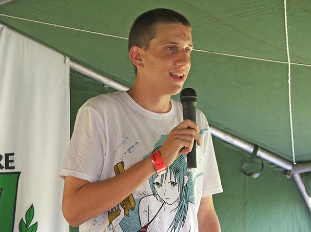

Pályája a 2009. augusztus 15-én Kiskörén megrendezett I. Duma-Tisza Humorbajnokságon kezdődött, melyen második helyezést ért el. A zsűri tagjai olyan neves humoristák voltak, mint Benk Dénes és Ürmös Zsolt. Ezt követően a "Dumakocsmákban" próbálkozott, majd kétszer a Dumaszínház "Fiatal félőrültek fesztiválján" is fellépett. Lehetősége nyílt a Mikroszkóp Színpad "Szójjá be" című Stand-up Comedy műsor keretén belül is bemutatkoznia, de végül a színház élén történt vezetőcsere miatt ez nem valósult meg. 2010 elején került a Háry Vendéglő DumaPódiumára ahol rendszeres fellépővé vált. 2010 augusztusában részt vett a II. Duma-Tisza Humorbajnokságon, ahol harmadik helyezést sikerült elérnie.A Comedy Central bemutatja című műsorban is kapott egy fél adásnyi lehetőséget. Továbbá megjelent az RTL, a Digi Sport, valamint a Fix TV képernyőjén.
Később felhagyott a Stand-up comedyvel, jelenleg youtube videókat készít tömegközlekedési eszközökről és elhagyatott helyekről. Bár több mint 37 ezer követője van a YouTube csatornájának, a közlekedésbarátok között igazi megosztó személyiségnek tartják, aki nem ad a szakmai véleményekre, kritikára. 2019-ben a MÁV felkérte a magyar vasút népszerűsítésére. Ezen munka segítése érdekében kapott egy MÁV ajándékcsomagot és 2 db Start Klub VIP kártyát.

2019 őszén több év kihagyás után újra televíziós szereplési lehetőséget kapott, ezúttal műsorvezetőként a TV2 új Vasúttúra című ismeretterjesztő műsorában, amit Stohl Lucával közösen vezet.